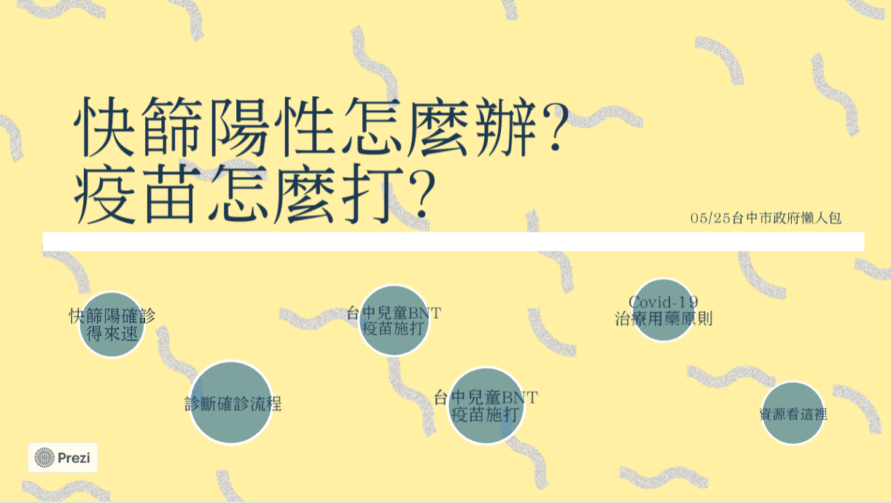

作品集
課程名稱：數位敘事實作與應用
學號：410827686
系級：大傳三A
姓名：陳 琳
指導老師：王錦裕老師
目 錄
台中市景點網頁設計
https://chenlinnnn.github.io/Taichung-city/
個人資訊網
https://chenlinnnn.github.io/myself/
地圖敘事(使用GoogleMyMap)
https://www.google.com/maps/d/u/2/embed?mid=1OMD761HRR2JWrdd_c1uDyxCtX9wqHR4z&ehbc=2E312F
圖表敘事-SVG實作(使用RawGraph)
https://chenlinnnn.github.io/money/
圖表敘事-LineChart實作(使用HighCharts)
https://chenlinnnn.github.io/tourist/
圖表敘事-PieChart實作(使用HighCharts)
https://chenlinnnn.github.io/asia/
故事地圖實作(使用KnightLab)
https://chenlinnnn.github.io/map/
虛擬實境實作(使用Krpano)
https://www1.pu.edu.tw/~s1082768/vtour/tour.html
互動式魚骨圖實作(使用amCharts)
https://www1.pu.edu.tw/~s1082768/time/index5.html
互動簡報製作(使用Prezi)
https://prezi.com/view/GtUo0TMajcTIgI4SH5tS/
動畫影片製作(使用Powtoon)
https://www.powtoon.com/s/bzbDLmf44k1/1/m/s
台中市景點網頁設計
進入作品
個人資訊網
進入作品
地圖敘事(使用GoogleMyMap)
進入作品
圖表敘事-SVG實作(使用RawGraph)
進入作品
圖表敘事-LineChart實作(使用HighCharts)
進入作品
圖表敘事-PieChart實作(使用HighCharts)
進入作品
故事地圖實作(使用KnightLab)
進入作品
虛擬實境實作(使用Krpano)
進入作品
互動式魚骨圖實作(使用amCharts)
進入作品
互動簡報製作(使用Prezi)
進入作品

動畫影片製作(使用Powtoon)
進入作品